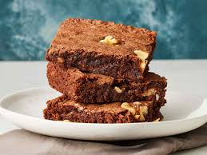

Brownie

Description
A chocolate brownie is a rich, square or rectangular baked dessert bar, often with a moist and fudgy texture, and a deep chocolate flavor.
Ingredients
- Dark Chocolate - 200g chopped
- Butter - 1/2 cup or 115g
- Sugar - 1 cup
- Eggs - 2 large
- Vanilla Extract - 1 tablespoon
- All purpose flour(maida) - 1/2 cup
- Cocoa Powder - 2 tablespoon
- Salt - a pinch
- Choclate chips - 1/2 cups
Steps
- Preheat oven to 175°C (350°F) and grease or line a square baking pan.
- Melt chocolate and butter together in a bowl over simmering water or microwave.
- Whisk in sugar until smooth and slightly cooled.
- Add eggs one at a time, beating well after each addition.
- Stir in vanilla extract.
- Sift in flour, cocoa powder, and salt; fold gently into the batter.
- Mix in extra chocolate chips.
- Pour batter into the prepared pan and spread evenly
- Bake for 25-30 minutes or until a toothpick comes out with moist crumbs.
- Cool completely before cutting into squares and serving.
Home